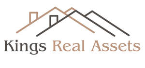

Trade Mark Journal No.2025/011 14 March 2025
UK00004166068 27 February 2025 (36,37)
Mark 1

Mark 2
- Class 36
- Building management; Building leasing; Financial management of building renovation projects; Management of property; Property management; Leasing of property; Property management services; Property asset management services; Property investment services; Rental of property; Time-share property management; Real estate and property management services; Leasing of freehold property; Financing of property development; Real property management; Commercial property investment services; Valuation of property; Property valuation; Property leasing [real estate property only]; Intellectual property valuation services; Provision of finance for property development; Insurance for property owners; Loan services for property investment; Real estate services related to management of property investments; Property appraisal services [valuation]; Property portfolio management; Property (Real estate -) management; Real estate property management; Estate management services relating to transactions in real property; Insurance services relating to property; Arranging of leases for the rental of commercial property; Financial valuation of leasehold property; Financial valuation of freehold property; Arranging leases for the rental of property; Financial services relating to the sale of property; Rental of real estate and property; Valuation of real estate property; Leasing of real estate property; Property (Real estate -) investment; Trusteeship of real estate property; Property (Real estate -) insurance; Mortgaging relating to property and land; Property (Real estate -) evaluations; Accommodation bureaux (real estate property); Property (Real estate -) finance; Insurance relating to property; Financial valuation of intellectual property assets; Property (real estate -) appraisal [financial]; Property (Real estate -) brokerage services; Leases (arranging of -) [real estate property only]; Agency services for the leasing of real estate property; Providing real estate information relating to property and land; Insurance brokerage for property; Property (Real estate -) consultancy services; Financial valuation of personal property and real estate; Evaluation of real property; Financial services relating to real estate property and buildings; Administration of property portfolios; Appraisal of personal property for others; Financial services relating to real estate property; Provision of information relating to property [real estate]; Provision of information relating to the property market [real estate]; Real property letting; Valuations and financial appraisals of property; Financing of property loans; Securing of funds for the purchase of property; Appraisals for insurance claims of personal property; Property investment banking services; Financial services relating to property; Property insurance underwriting; Real property evaluation [financial]; Valuation services of property for fiscal purposes; Financial services relating to the acquisition of property; Domestic property finding services; Rental of real estate; Estate agency services for sale and rental of buildings; Real estate agency services relating to the purchase and sale of land; Agency services for the selling on commission of real property; Real estate management services relating to residential buildings; Real estate agency services for the leasing of land; Real estate listing services for housing rentals and apartment rentals; Real estate agency services for the rental of buildings; Apartment house management leasing; Accommodation letting agency [apartments]; Accommodation (leasing of -) [apartments]; Rental and leasing of offices; Accommodation (rental of -) [apartments]; Leasing of apartments; Rental of apartments; Estate agency services for sale and rental of businesses; Leasing and rental of commercial premises; Rental of apartments and offices; Rental or leasing of buildings; Leasing or rental of buildings; Apartment and office rentals; Management of apartments; Rental of business premises; Letting and rental of permanent accommodation; Rental of offices [real estate]; Apartment rental services; Agencies or brokerage for leasing or renting of land; Rental of offices; Rental of homes; Residential real estate agency services; Apartment letting agency; Leasing of offices; Rental of flats, studios and rooms; Arranging of leases and rental agreements for real estate; Insurance services relating to holiday accommodation; Rental of farms; Accommodation bureaux [apartments]; Reinsurance consultancy; Rental of flats; Estate agency services; Real estate management services relating to housing estates; Mortgage broking services; Advice relating to mortgages for residential properties; Agencies or brokerage for renting of buildings; Agencies or brokerage for renting land; Estate agency; Agency (Estate -); Management of commercial properties; Rental of buildings; Private client unit trust management services; Leasing of flats; Estate agencies; Agency services for lending on mortgage; Estate agent services; Letting agency for sheltered accommodation; Financial loan consultancy; Mortgage broking; Real estate management services relating to office premises; Pensions consultancy; Stockbroking agency services; Safe deposit services for valuables; Safe deposit services; Safe deposit box services; Providing information relating to safe deposit services for valuables; Provision of safe deposit facilities; Safe deposit services for precious metals; Providing information relating to safe deposit services for precious metals; Safe deposit services for securities; Providing information relating to safe deposit services for securities; Safety deposit services for valuables; Check verification; Check cashing; Verification (Check [cheque] -); Check [cheque] verification; Bank note checking; Check payment guarantee services; Travelers' check issuance; Checking account services; Processing of electronic check payments; Electronic check acceptance services; Cash, check (cheque) and money order services; Letting of office accommodation; Paperless electronic checking account services; Rental of office space; Issuance of bank checks; Rental, hire and lease of equipment for processing financial cards; Rent payment services ; Leasing of shopping premises; Leasing or renting of buildings; Credit leasing; Financial leasing [hire purchase]; Leasing of office space; Providing information relating to the rental of cash dispensers or automated teller machines; Cheque verification; Apartment house management; Lease purchase finance; Credit card verification; Renting of commercial premises; Providing information relating to the rental of buildings; Letting of office space; Renting of offices; Business credit verification services; Cheque verification services; Provision of funds for hire purchase and for leasing; Bank account information services; Financing of lease purchase; Providing bank account information by telephone; Providing student loan information; Repair cost evaluation [financial appraisal]; Evaluation (Repair costs -) [financial appraisal]; Repair costs evaluation [financial appraisal]; Fiscal assessment and evaluation; Real estate affairs; Real estate affairs services; Administration of financial affairs relating to real estate; Real estate administration; Real estate management; Estate management (Real -); Management of real estate; Valuations in real estate matters; Real estate agencies; Estate agencies (Real -); Real estate appraisals; Real estate broking; Real estate appraisal; Real estate consultations; Leasing of real estate; Real estate leasing; Real estate syndication; Valuations (Real estate -); Real estate consultation; Valuation of real estate; Real estate time-sharing; Evaluation of real estate; Real estate assessment [financial]; Real estate investment planning; Real estate investment services; Real estate appraisal services; Consultancy in the purchasing of real estate; Real estate agency services; Financial management of real estate projects; Real estate management services; Real estate agents services; Real estate valuation services; Commercial real estate agency services; Assisting in the acquisition of and financial interests in real estate; Real estate lending services; Capital investment in real estate; Financial services related to real estate; Corporate real estate advisory services; Assessment and management of real estate; Advisory services relating to real estate ownership; Financial evaluation [insurance, banking, real estate]; Consultation services relating to real estate; Appraisals for insurance claims of real estate; Financing of real estate development projects; Arranging of shared ownership of real estate; Appraisal and evaluation of real estate; Real estate lease surrender services; Providing information relating to real estate affairs, via the Internet; Real estate management services relating to retail premises; Arranging the provision of finance for real estate purchase; Real estate lease renewal services; Real estate agency; Lease of real estate; Leasing of land; Land leasing; Management of land; Land leasing services; Financing of land acquisition; Land acquisition services; Acquisition of land to be let; Housing agencies; Housing agency; Housing management; Provision of housing accommodation; Provision of permanent housing accommodation; Housing accommodation (Provision of permanent -); Real estate management services relating to building complexes; Accommodation bureau services [apartments]; Provision of finance for real estate development; Provision of real estate loans; Rental of houses; Renting of dwellings; Insurance services relating to nursing homes; Financing services relating to real estate development; Financial management services relating to retirement homes; Renting of homes; Real estate management services relating to commercial buildings; Real estate agency services relating to the purchase and sale of buildings; Leasing of accommodation in a retail outlet; Apartments (Renting of -); Renting of apartments; Apartment locating services for others [permanent accommodation]; Provision of industrial loans; Mortgage financing services; Building society services relating to finance; Real estate management services relating to industrial premises; Provision of mortgage loans; Insuring of hotel accommodation; Letting of houses for hire; Financing (Hire purchase -); Hire purchase financing services; Commercial lending; Commercial lending services; Provision of commercial finance; Provision of commercial loans; Commercial mortgage brokerage; Renting of houses; Brokerage house services; Bankers clearing house services; Financial clearing house service; Clearing house financial services; Financial clearing house services; Automated clearing house services; Leasing of houses; Financial clearing houses; Home banking; Banking (Home -); Debt collection; Collection of debts; Collection of payments; Collection agencies; Rent collection; Collection (Rent -); Collection of rent; Debit collection; Collection of rents; Electronic debt collection; Debt collection services; Debt collection agencies; Rent collection agencies; Credit recovery and collection; Collection of credit sales; National debt collection; Collections (Organization of -); Organization of collections; Debt collection agency services; Collection of financial information; Organising collections; Debt recovery and collection agencies; Organisation of collections; Collections (Organisation of -); Bailiff services (debt collection); Collections (Charitable -); Organising of debt collections; Electronic toll collection services; Collection of non-domestic rates; Computerised legal debt collection services; Collection of community charge monies; Home collection of financial payments; Arranging the collection of customs duties; Collection of payments for goods and services; Collections (Organising financial -); Organising financial collections; Collection of money owed from settlements ; Organization of monetary collections; Organising of charitable collections; Debt collection and debt factoring services; Collection of debt on real estate rental; Organisation of financial collections; Organisation of charitable collections; Negotiation for the collection of cheques and bills of payment; Agency for collection of gas and electricity fees; Security brokerage; Financial lending against security; Security services for guaranteeing of loans; Lending against security; Financial services in the nature of an investment security; Provision of financial loans against security; Provision of loans against security; Loans against security (Provision of -); Financial affairs; Administration of financial affairs; Financial affairs services; Monetary affairs; Monetary affairs services; Conducting of financial affairs on-line; Estate planning services [arranging financial affairs]; Financial banking; Financial management relating to banking; Financial economic advisory services; Financial management; Management (Financial -); Financial transactions; Insolvency services [financial]; Economic research services [financial]; Economic financial research services; Financial guardianship; Financial and monetary services; Financial investments; Financial and monetary services, and banking; Financial management services relating to banking institutions; Financial management of pensions; Financial information services relating to financial bond markets; Financial economic analysis; Financial consultancy; Financial investment; Consultancy (Financial -); Financial evaluations [banking]; Financial consulting; Financial information services relating to financial stock markets; Financial services relating to business; Financial solvency investigations; Banking and financial services; Advisory services relating to financial matters; Financial services; Financial advisory services relating to insolvency; Financial management relating to investment; Financial loans to commerce; Financial planning; Financial securities; Personal financial banking services; Financial underwriting; Management of financial assets; Financial trust operations; Financial management services relating to medical institutions; Financial forecasting; Financial consultancy relating to loans; Planning (estate -) [financial]; Business liquidation services, financial; Financial and monetary transaction services; Financial assistance; Personal financial planning; Actuarial services relating to financial transactions; Financial brokerage; Brokerage (Financial -); Exchange of financial operations (Agencies for the -); Financial research; Research (Financial -); Financial studies; Studies (Financial -); Financial investment services; Financial services relating to wealth management; Financial appraisals; Appraisals (Financial -); Financial management for businesses; Financial engineering; Financial management of funds; Financial investment management services; Financial management services; Financial management services relating to dental institutions; Financial services relating to international securities; Financial management of current accounts; Financial services relating to investment; Personal financial planning services; Arranging of financial investments; Consultations [financial]; Personal financial planning advisory services; Advisory services relating to financial investments; Arranging financial transactions; Financial planning services relating to taxation; Financial fund management; Financial advisory services relating to life assurance; Financial investigation services; Financial management services relating to convalescent institutions; Financial advisory services relating to assets management; Financial appraisal; Financial management services relating to nursing institutions; Advisory services relating to financial investment; Computerised financial services relating to foreign currency dealings; Conducting of financial transactions; Evaluation (Financial -) [insurance, banking, real estate]; Financial services relating to pensions; Consultancy relating to educational financial assistance; Administration of financial covenants; Financial planning and management; Financial management and planning; Financial analysis; Analysis (Financial -); Financial lending; Financial management of stocks; Financial exchange; Financial services relating to securities; Financial portfolio management; Financial research services; Financial transaction services; Financial advisory services; Financial investment research services; Financial management of companies; Financial analyses; Financial advisory services relating to tax; Consultancy services relating to financial investment; Financial consultancy services relating to investments; Financial consultation; Financial appraisal services; Financial investment advisory services; Financial advisory and management services; Financial management advisory services; Financial trust management; Financial trust administration; Financial planning for retirement; Financial advisory services relating to securities; Financial information; Information (Financial -); Financial consultancy relating to real estate investment; Advisory services relating to financial planning; Financial assessments; Financial planning and investment advisory services; Information services relating to financial business appraisals; Financial sponsorship of entertainment activities; Management of corporate finances; Real estate investment; Real estate consultancy; Real estate brokerage; Brokerage of real estate; Appraisal (Real estate -); Appraisal of real estate; Real estate services; Real estate financing; Real estate (Leasing of -); Real estate trustee services; Real estate investment management; Investment in real estate (Services for -); Financial evaluations [real estate]; Real estate investment consultancy; Real estate procurement for others; Real estate investment advice; Financial brokerage services for real estate; Real estate escrow services; Real estate insurance services; Arranging of leases of real estate; Real estate acquisition services; Real estate appraisals [valuations]; Insurance services relating to real estate; Assisting in the acquisition of real estate; Real estate acquisition [for others]; Management services for real estate investment; Real estate appraisal and valuation; Consultancy services relating to real estate; Financial services for the purchase of real estate; Investment advisory services relating to real estate; Advisory services relating to real estate valuations; Arranging letting of real estate; Real estate management services relating to entertainment venues; Research services relating to real estate acquisition; Real estate management services relating to shopping malls; Estate brokerage; Real estate settlement services [financial services]; Estate management; Estate management services relating to agriculture; Financial management of building projects; Building society services; Financial planning services relating to building projects; Financing of building projects; Preparation of financial reports relating to building projects; Preparation of financial reports relating to the financing of building projects; Brokerage of building society savings agreements; Financial management of building occupancy expenses; Management of buildings; Financial services relating to the maintenance of vehicles; Arranging of finance for sporting, cultural and entertainment projects; Estate management services relating to horticulture; Financial services relating to mortgages; Planning of finances relating to taxation; Consultations relating to corporate finance; Advisory services relating to corporate finance; Administration of mortgage business; Real estate management services relating to shopping centers; Consultancy services relating to corporate finance; Financial management services relating to local authorities; Arranging finance for television programs; Advisory services relating to investments and finance; Consultancy services relating to the financing of civil works and infrastructure projects; Brokerage services relating to municipal bonds; Advisory services relating to investment finance; Arranging finance for radio programs; Administration of insurance business; Financing of loans relating to office machines.
- Class 37
- Maintenance of plumbing; Repair or maintenance of conveyors; Aircraft maintenance or repair; Aircraft repair or maintenance; Aircraft maintenance and repair; Repair and maintenance of aircraft; Repair or maintenance of aircraft; Maintenance and repair of aircraft; Aircraft repair and maintenance; Maintenance and repair of heating; Maintenance and repair of cranes; Plant maintenance; Maintenance and repair of lifts; Machinery installation, maintenance and repair; Building maintenance and repair; Building maintenance; Burner maintenance and repair; Burner maintenance or repair; Maintenance and repair of pipelines; Vehicle maintenance; Maintenance (Vehicle -); Maintenance and repair of security installations; Maintenance and repair of burners; Maintenance and repair of buildings; Maintenance and repair of storage installations; Maintenance and repair of hardware; Safe maintenance or repair; Safe maintenance and repair; Repair or maintenance of boilers; Pump repair and maintenance; Pump repair or maintenance; Repair or maintenance of veterinary installations; Maintenance and repair of engines; Vehicle maintenance and repair; Vehicle repair and maintenance; Maintenance and repair of compressors; Maintenance of aircraft; Aircraft maintenance; Maintenance and repair of flooring; Maintenance and repair of security systems; Plumbing installation, maintenance and repair; Maintenance and repair of yachts; Maintenance and repair of motors; Vehicles maintenance and repair; Maintenance and repair of vehicles; Repair and maintenance of vehicles; Repair and maintenance of airplanes; Maintenance and repair of airplanes; Maintenance and repair of aeroplanes; Repair and maintenance of aeroplanes; Maintenance and repair of bicycles; Highway maintenance; Maintenance and repair of gates; Aircraft maintenance and repair services; Maintenance of vehicles; Maintenance and repair of gears; Furniture maintenance and repair; Maintenance and repair of furniture; Repair or maintenance of firearms; Maintenance and repair of heating installations; Maintenance, servicing and repair of vehicles; Maintenance of buildings; Machinery maintenance services; Maintenance of property; Property maintenance; Lift maintenance; Tyre maintenance and repair; Maintenance and repair of automobiles; Repair and maintenance of automobiles; Repair or maintenance of automobiles; Maintenance of roads; Maintenance and repair of footwear; Repair or maintenance of signboards; Airplane maintenance and repair; Automobile repair and maintenance; Aeroplane maintenance and repair; Maintenance and repair of telephones; Car maintenance; Maintenance and repair of clothing; Maintenance and repair of drones; Repair or maintenance of building equipment; Furniture maintenance; Installation, repair and maintenance of heating equipment; Maintenance and repair of toys; Maintenance and repair of spacecraft; Maintenance and repair of motorcycles; Strong-room maintenance and repair; Repair or maintenance of computers; Maintenance and repair of computers; Maintenance and repair of pressure equipment; Maintenance and servicing of security alarms; Pipeline maintenance; Maintenance and repair of upholstery; Clock repair or maintenance; Maintenance and repair of electronic installations; Maintenance of cleaning machines; Repair or maintenance of mechanical parking systems; Maintenance and repair of garden tools; Repair or maintenance of vessels; Maintenance and repair of strongrooms; Repair or maintenance of bathtubs; Maintenance, servicing and repair of weapon systems; Repair and maintenance of spectacles; Furniture restoration, repair and maintenance; Maintenance of locomotives; Maintenance and repair of watches; Maintenance and repair of ships; Maintenance and repair of camping equipment; Maintenance and repair of safes; Maintenance and repair of utilities in buildings; Installation and maintenance of irrigation systems; Shoe maintenance and repair; Repair or maintenance of vehicle washing installation; Maintenance and repair of communications systems; Maintenance and repair of mining equipment; Installation, maintenance and repair of telecommunications equipment; Maintenance and repair of pipeline systems; Watch repair or maintenance; Installation, maintenance and repair of kitchen equipment; Maintenance of computers; Maintenance and repair of electronic equipment; Repair and maintenance of smartphones; Maintenance and repair of sporting equipment; Maintenance and repair of geothermal installations; Swimming-pool maintenance; Maintenance and repair of automatic transmissions; Maintenance and repair of water vehicles; Maintenance of aquariums; Maintenance, servicing, tuning and repair of motors; Sign maintenance; Maintenance and repair of manual transmissions; Maintenance and repair of transport containers; Window maintenance; Office equipment maintenance; Installation, maintenance and repair of air-conditioning apparatus; Computer installation and maintenance services; Floor maintenance services; Maintenance of communications equipment; Maintenance and repair of industrial piping; Repair or maintenance of overhead projectors; Maintenance and repair of storage tanks; Repair and maintenance of building scaffolds, working and building platforms; Maintenance and repair of building contents; Building repairs; Building construction and repair; Maintenance and repair of residential buildings; Maintenance and repair of office buildings; Building repair; Building repair and renovation; Building construction supervision services for building projects; Building inspection [in the course of building construction]; Building construction; Supervision of building repair; Building restoration; Repair and maintenance of buildings in case of demolition; Building and construction services; Building construction services; Building construction and demolition services; Building cleaning; Rental of tools, plant and equipment for construction, demolition, cleaning and maintenance; Providing information relating to the construction, repair and maintenance of buildings; Building refurbishment services; Supervision of building renovation; Rental of construction and building equipment; Rental of building construction machinery; Building, construction and demolition; Supervision of building construction; Building construction supervision; Supervision (Building construction -); Pipeline construction and maintenance; Building services relating to building for habitation; Installation services for building scaffolds, working and building platforms; Cleaning of building facades; General building construction services; Building construction consultancy; Building maintenance and repair services provided by a handyman; Installation of building automation equipment; Leasing of building machinery; Installation of building scaffolds, working and building platforms; Repair or maintenance of construction machines and apparatus; Building services; Erection of formwork for restoration and maintenance; Building project management services; Supervision of building demolition; Maintenance and repair of parts and fittings for buildings; Erection of scaffolding for building and construction; Renovation and repair of buildings; Maintenance and repair of strong rooms; Maintenance and repair of road making equipment; Installation of building insulation; Cleaning of building exteriors; Building construction advisory services; Cleaning of building interiors; Renovation, repair and maintenance of electrical wiring; Custom building construction; Office machines and equipment installation, maintenance and repair; Installation, maintenance and repair of office machines and equipment; Lift and elevator installation, maintenance and repair; Residential and commercial building construction; Rental of building machinery; Rental of building scaffolds, working and building platforms; Installation of glazed building structures; Office machine and equipment installation, maintenance and repair; Specialist building restoration; Cleaning of building sites; Installation services of building scaffolds; Repair or maintenance of office machines and equipment; Maintenance and repair of energy generating installations; Consultancy relating to residential and building construction; Rental of building equipment; Building equipment (Rental of -); Installation, repair and maintenance of cleanroom facilities and equipment; Services for the rental of machinery for building; Damp-proofing [building]; Building damp-proofing; Maintenance and repair of fire evacuation systems; Building caulking services; Consultation in building construction supervision; Warehouse construction and repair; Repair or maintenance of elevators [lifts]; Maintenance and repair of road making machines; Erection of formwork for building and construction; Construction of property; Cleaning of property; Renovation of property; Maintenance and repair of land vehicles; Repair and maintenance of land vehicles; Property development services [construction]; Garage services for vehicle maintenance; Vehicle maintenance equipment (Rental of -); Rental of vehicle maintenance equipment; Maintenance and repair of motor land vehicles; Advisory services relating to the renovation of property; Information with relation to aircraft repair and maintenance; Motor vehicle repair and maintenance services; Motor vehicle maintenance and repair services; Garage services for the maintenance and repair of motor vehicles; Providing information relating to the repair or maintenance of mechanical parking systems; Rental and maintenance of work platforms; Maintenance and repair services relating to automatic door equipment; Maintenance and repair of physical access control; Repair or maintenance of water pollution control equipment; Maintenance of vehicle washing installations; Maintenance and repair of access control systems; Maintenance and repair of public transport vehicles; Arranging for the maintenance of motor land vehicles; Repair or maintenance of bicycle parking apparatus; Providing information relating to the repair or maintenance of vehicle washing installations; Advisory services relating to the maintenance of buildings; Construction of residential properties; Building of commercial properties; Polishing (cleaning); Carpet cleaning; Cleaning of upholstery; Emptying [cleaning] services; Dry cleaning; Cleaning (Dry -); Cleaning services; Cleaning of furniture; Cleaning of clothes; Janitorial cleaning services; Clearing and cleaning gutters; Diaper cleaning; Cleaning (Diaper -); Rug cleaning; Cleaning of drains; Polishing [cleaning] of vehicles; Cleaning of furnishings; Domestic cleaning; Cleaning of boilers; Cleaning of blinds; Cleaning of clothing; Clothing (Cleaning of -); Cleaning of machines; Jewelry cleaning; Car cleaning; Textile cleaning; Cleaning of mats; Waste removal [cleaning]; Cleaning of windows; Diaper cleaning services; Cleaning of offices; Cleaning of shoes; Cleaning of textiles; Drain cleaning services; Upholstery cleaning services; Window cleaning; Cleaning of culverts; Cleaning of fabrics; Jewellery cleaning; Cleaning of gullies; Cleaning of footwear; Automobile cleaning; Cleaning of leather; Cleaning of factories; Boiler cleaning services; Street cleaning; Cleaning of shops; Boiler cleaning and repair; Cleaning of automobiles; Cleaning of schools; Cleaning of buildings; Cleaning of hospitals; Vehicle cleaning; Cleaning of streets; Loft cleaning; Cleaning of vehicles; Restroom cleaning services; Cleaning of structures; Hygienic cleaning [vehicles]; Cleaning of facades; Cleaning of hotels; Facade cleaning; Hygienic cleaning [buildings]; Cleaning of domestic utensils; Tube cleaning services; Leather cleaning and repair; Mechanical cleaning of waterways; Office cleaning services; Cleaning of monuments; Apartment refurbishment services; Construction of holiday accommodation; Repairs to buildings; Concrete repairs; Furnace installation and repairs; Maintenance and repair of parts and fittings for boats; Arranging of vehicle repairs; Roofing repair; Repair of roofing; Maintenance and repair of cooling appliances and installations; Repair and restoration of furniture; Maintenance or repair of automotive vehicles; Maintenance and repair of electric vehicles; Repair and maintenance of electric vehicles; Maintenance and repair of rail vehicles; Services for the repair of drains; Maintenance and repair of motor vehicles; Repair and maintenance of motor vehicles; Machinery repair; Repair of vehicle washing installations; Maintenance and repair of computers [hardware]; Repair of alarms; Alarms (Repair of -); Services for the repair of pipes; Boiler repair services; Maintenance and repair of ships' hulls; Repair of electrical equipment; Repair of windscreens; Furniture repair; Repair of furniture; Maintenance and repair of photographic equipment; Vehicle repair, maintenance, refuelling and recharging; Installation, maintenance and repair of burglar alarms; Repair or maintenance of fire alarms; Repair or maintenance of gasoline station equipment; Repair of buildings; Inspection of automobiles and their parts prior to maintenance and repair; Locksmithing [repair]; Painting; Painting and varnishing; Painting of furniture; Spray painting; House painting; Vehicle painting; Automobile painting; Painting of buildings; Painting and decorating of buildings; Painting of aircraft; Painting of vehicles; Painting and decorating services; Sign painting; Painting of signs; Decorative painting services; House painting services; Coating [painting] services; Spray painting of metals; Painting restoration services; Services for the painting and decorating of buildings; Signs (Painting or repair of -); Signs (Painting and repair of -); Painting or repair of signs; Painting of window frames; Sign painting services; Decorative interior house painting services; Painting contractor services; Painting, interior and exterior; Paint work; Painting of motor vehicles; Paint spraying; Providing information relating to safe maintenance and repair; Alarm, lock and safe installation, maintenance and repair; Providing of information relating to repairing and maintaining stable equipment; Providing information relating to the rental of floor cleaning machines; Inspection of premises to detect woodworm; Proofing of premises against pest and vermin access; Information concerning rental of equipment for constructions and buildings; Conversion of shop premises; Information on the maintenance of measuring and test equipment; Rental of cleaning equipment; Cleaning equipment (Rental of -); Cleaning of office buildings and commercial premises; Excavating services for verifying the location of utility lines; Rental of floor cleaning machines; Lease of carpet cleaning machines; Proofing of buildings against pest and vermin access; Rental of building tools; Inspection of vehicles prior to maintenance; Inspection of vehicles prior to repair; Inspection of structures to detect woodworm; Maintenance, repair and reconditioning of photovoltaic apparatus and installations; Repair, servicing and maintenance of vehicles and apparatus for locomotion by air; Installation, maintenance and repair of medical apparatus and instruments; Repair or maintenance of laboratory apparatus and instruments; Advisory services relating to the maintenance and repair of mechanical and electrical equipment; Maintenance and repair of photographic apparatus; Maintenance and repair of fire detection systems; Building; Building of apartment buildings; Building of houses; House building; Building demolition; Building of foundations; Building of offices; Building of bridges; Building insulation; Building reinforcing; Building of factories; Building of underground structures; Building insulating; Insulating (Building -); Road building; Building of shops; Building of roads; Building sealing; Sealing (Building -); Building of railways; Building of schools; Yacht building; Building consultancy; Building of hospitals; Building of industrial properties; Construction of buildings; Buildings (Construction of -); Hiring of building machinery; Building services relating to building for industry purposes; Construction of foundations for buildings; Reclamation of land; Reclamation (Land -); Land reclamation; Land irrigation; Irrigation (Land -); Land drainage; Drainage (Land -); Land excavating; Development of land [construction]; Construction land developing; Refuelling of land vehicles; Repair of land vehicles; Laying of land cables; Land vehicle repair; Civil engineering relating to agricultural land; Civil engineering relating to rural land; Construction of public housing; Construction of private housing; Erecting of housing areas; Residential construction; Rental of apparatus for use in the construction of buildings; Cleaning of residential houses; Construction of houses; Construction of healthcare buildings; Building construction supervision services for real estate projects; Assembly of prefabricated houses; Construction of interior accommodation; Construction of educational buildings; Construction of institutional buildings; Construction works for prefabricated houses; Services for the construction of buildings; Construction of pre-fabricated houses for hippopotami; Insulation of buildings during construction; Buildings (Insulation of -) during construction; Pest control for residential homes; Underwater construction services; Underwater building and construction; Rental of construction apparatus; Temporary structure construction services; Installation of residential security apparatus; Construction; Scaffolding construction; Industrial construction; Infrastructure construction; Pipeline construction; Insulation construction; Construction of tunnels; Construction supervision of buildings; Construction of bridges; Construction of pipelines; Commercial construction; Construction of dams; Construction of railways; Construction of factories; Pier construction; Supervision of construction; Construction supervision; Construction of roads; Factory construction; Road construction; Offshore construction; Construction of walls; Buildings (Waterproofing of -) during construction; Onshore construction; Custom construction of buildings; Construction of carriageways; Construction of greenhouses; Construction of chimneys; Construction consultancy; Construction of floors; Construction services; Heavy engineering construction; Underground construction; Construction of manufacturing and industrial buildings; Erection of scaffolding for civil engineering construction; Erection of formwork for civil engineering construction; Construction of buildings and other structures; Construction of kitchens; Construction of motorways; Underwater construction; Construction of steel structures for buildings; Construction of piles; Hiring of construction machinery; Harbour construction; Marine construction; Buildings (Supervision during construction of -); Construction consultation; Steel structure construction works; Construction of ceilings; Buildings (Damp-proofing of -) during construction; Site preparation [construction]; Street construction; Rail infrastructure construction; Construction of partitioning; Hydro-electric factory construction; Construction of sunrooms; Sealing of buildings during construction; Buildings (Sealing of -) during construction; Construction of hydroelectric factories; Custom construction of bridges; Buildings (Fire-proofing of -) during construction; Sign construction; Civil infrastructure construction; Construction of ramparts; Construction of partitions; Construction supervision of civil engineering projects; Custom construction of roads; Construction of foundations for roads; Construction of steel fabrications; Construction of cubicles; Construction of airports; Fireproofing during construction; Construction of multihome buildings; Construction of foundations for dams; Scenery construction; Damp-proofing during construction; Construction of ports; Custom construction of factories; Hiring of construction equipment; Custom construction of motorways; Construction of railway roadbeds; Civil engineering construction; Construction of stables; Aviation infrastructure construction; Machinery for use in construction (Rental of -); Installation and maintenance of photovoltaic installations; Installation of geothermal installations; Installation of plumbing; Roofing installation; Installation of roofing; Installation of windows; Machinery installation; Ceiling installation; Installation of shelving; Installation of boilers; Installation and maintenance of solar thermal installations; Furniture installation; Installation of racks; Installation of bolts; Installation of plant; Plant installation; Installation of windscreens; Installation of pipelines; Alarms (Installation of -); Installation of locks; Antenna installation and repair; Installation of doors; Installation of grills; Installation of blinds; Elevator installation; Installation of elevators; Installation of conveyors; Telephone installation; Window installation; Installation of tents; Installation of glass; Installation of radios; Installation of plumbing systems; Installation of lighting systems; Installation of computers; Installation of kitchens; Installation of motors; Installation of pipework systems; Furnace installation and repair; Pipeline installation and repair; Heating equipment installation; Installation of safes; Computer installation and repair; Lift installation; Installation of gates; Elevator installation and repair; Lifts (Installation of -); Underwater construction, installation and repair; Air-conditioning system installation and repair; Telephone installation and repair; Roof installation services; Installation of audiovisual equipment; Installation of lighting apparatus; Lighting apparatus installation; Freezers (Installation of -); Pipe installation services; Installation of telephones; Installation of security system; Electrical installation services; Heating equipment installation and repair; Installation and repair of heating equipment; Installation of communication equipment; Office equipment installation; Installation of door fittings; Installation of window fittings; Installation of hydraulic equipment; Installation and repair of air-conditioning apparatus; Installation of energy-saving apparatus; Installation of instrumentation systems; Freezing equipment installation and repair; Assembling [installation] of shelving; Computer installation services; Installation of apparatus for air-conditioning; Installation of lock fittings; Machinery installation services; Lift installation and repair; Installation of security systems; Installation, repair and maintenance of condensing apparatus; Installation of fittings for buildings; Installation, maintenance and repair of broadcasting apparatus; Installation of radio equipment; Services for the installation of alarms; Installation of washroom apparatus; Kitchen equipment installation; Installation of kitchen equipment; Installation of apparatus for heating; Installation of heating apparatus; Computer hardware (Installation, maintenance and repair of -); Installation, maintenance and repair of computer hardware; Assembling [installation] of storage systems; Services for the installation of sewers; Installation of industrial piping; Installation of hydropower systems; Installation of computer systems; Installation of catering equipment; Installation, repair and maintenance of boiler tubes; Installation of pipe insulation; Installation and repair of telecommunications hardware; Irrigation devices installation and repair; Services for the installation of drains; Installation of temporary fences; Installation of concreting formwork; Installation of computer hardware; Assembly [installation] of accessories for vehicles; Installation and repair of computer hardware; Electric appliance installation ; Electric appliance installation and repair; Installation of fitted furniture; Installation, repair and maintenance of air reheaters; Installation of fabricated construction units; Installation of shuttering for concreting; Preparation of a site for the installation of computer equipment; Installation of apparatus for sanitation; Office machine installation; Installation of electrical grounding; Installation, repair and maintenance of steam condensers; Installation of utilities in construction sites; Installation of drying apparatus; Plumbing; Plumbing services; Renovation of plumbing; Plumbing and gas and water installation; Cleaning of water supply plumbing; Sewer pipe servicing; Sewer pipe cleaning; Drywall contractor services; Plumbing and glazing services; Plumbing repair advisory services; Carpentry contractor services; Services of electricians; Sewer pipe renovation; Mechanic services; Rental of plumbing apparatus; Plumbing apparatus (Rental of -); Sewer pipe maintenance; Plastering contractor services; Electrical contractor services; Burglar alarm installation and repair; Plumbing installation advisory services; Heating contractor services; Burglar alarm repair; Cleaning of water supply pipework; Glazier services; Septic tank cleaning; Installation of water pipes; Maintaining and repair of drain pipes; Advisory services relating to the repair of plumbing; Plumbing maintenance advisory services; Septic tank pumping and cleaning; Repair of vacuum cleaners; Telephone repair; Repair of bathtubs; Insulation of pipes; Repair of tiles; Steeplejack services; Repair of ironmongery; Installation of sewer liners; Maintenance, servicing and repair of household and kitchen appliances; Burglar alarm installation; Advisory services relating to the installation of plumbing; Pump repair; Bricklaying; Hiring of tree pullers; Scaffolding hire; Hire of scaffolding; Hire of ladders; Hire of steps; Hire of construction apparatus; Hire of chutes; Cleaning equipment hire; Hire of construction plant; Hire of tools; Hire of lifting apparatus; Hire of construction machinery; Hire of stagings; Hire of trestles; Hire of roadworking machinery; Hire of building tools; Hire of building machinery; Heavy plant hire; Hire of scaffolding boards; Vacuum cleaner repair; Carpet and rug cleaning; Rental of carpet cleaning machines; Abrasive cleaning of surfaces; Servicing of commercial vehicles; Cleaning of commercial premises; Industrial deep cleaning for commercial catering establishments; Removing birds from residential and commercial buildings; Erecting of commercial centres; Insecticide spraying for commercial buildings; Installation of commercial cooking apparatus; Interior renovation of commercial premises; Custom construction of houses; Cleaning of buildings [interior]; Buildings (Cleaning of -) [interior]; Renovation of furniture; Furniture renovation; Building of multi-storey car parks; Rental of building machines; Carpentry; Carpentry services; Joinery [repair]; Repair of wood flooring; Joinery services [repair of woodwork]; Construction of staircases of wood; Repair of kitchen furniture; Masonry; Fitting of wood flooring; Furniture upholstering; Maintenance of wood flooring; Installing wood flooring; Construction of saunas; Interior and exterior cleaning of buildings; Cleaning of building exterior surfaces; Construction of partition walls for interiors; Interior refurbishment of buildings; Cleaning of buildings [exterior surface]; Buildings (Cleaning of -) [exterior surface]; Cleaning of exterior surfaces of buildings; Cleaning of the exterior surfaces of buildings; Construction of curtain walls; Construction of parts of buildings; Construction of diaphragm walls; Construction of house extensions; Construction of screens; Custom installation of exterior, interior and mechanical parts of vehicles [tuning]; Cleaning of the interior surfaces of buildings; Installation of rainwater collection systems; Trash collection [refuse clean-up]; Installation of security and safety equipment; Security fencing (Erection of -); Repair of security locks; Locks (Repair of security -); Advisory services relating to the installation of security and safety equipment; Installation of vehicle security devices; Information services relating to maintenance of security systems; Information services relating to installation of security systems; Application of security films to glazing; Advisory services relating to building construction; General building contractor services; On site project management relating to the construction of buildings; Advisory services relating to building refurbishment; On site building project management; Advisory services relating to the construction of buildings and other structures; Construction of complexes for business; Supervision of building work; Building consultancy services; Advisory services relating to the construction of buildings; Consultancy services relating to the construction of buildings; Providing information relating to building renovation; Services for the renovation of buildings; Providing information relating to building demolition; Providing information relating to building construction; Advisory services relating to the maintenance of environmental control systems; Advisory services relating to the maintenance of plumbing; Advisory services relating to vehicle maintenance; Maintenance of domestic refrigeration; Maintenance and repair of communications networks; Advisory services relating to the maintenance of slip gauges; Maintenance and repair services relating to the air transport industry; Computer maintenance services; Advisory services relating to the maintenance of fixings; Services for the maintenance of computers; Maintenance and repair services relating to automatic barriers; Consultancy relating to the installation, maintenance and repair of computer hardware; Maintenance and repair services relating to door closers; Repair or maintenance of cooking apparatus for industrial purposes; Repair or maintenance of cooking apparatus and installations; Maintenance of commercial electrical systems; Advisory services relating to the repair of environmental control systems; Maintenance services for industrial plants; Maintenance of industrial machinery; Maintenance of catering equipment; Maintenance of medical equipment; Provision of maintenance services for sports establishments; Repair or maintenance of cooking apparatus; Providing information relating to the repair or maintenance of water pollution control equipment; Maintenance and repair of agricultural machines; Maintenance services relating to computer hardware; Repair or maintenance of fodder mixers; Maintenance of telecommunications apparatus; Domestic cleaning services; Valeting services relating to household cleaning; Valeting services relating to office cleaning; Industrial cleaning services; Valeting services relating to industrial cleaning; Cleaning of domestic premises; Housekeeping services [cleaning services]; Cleaning of public areas; Waste disposal [cleaning service]; Fur cleaning, care and repair; Fur care, cleaning and repair; Services for the dry cleaning of clothing; Cleaning of public buildings; Air duct cleaning services; Waste disposal for others [cleaning service]; Contract cleaning of offices; Civil engineering relating to the prevention of inundation of land by flood water; Repair of office machinery; Office machine maintenance.
Attiyya Smith